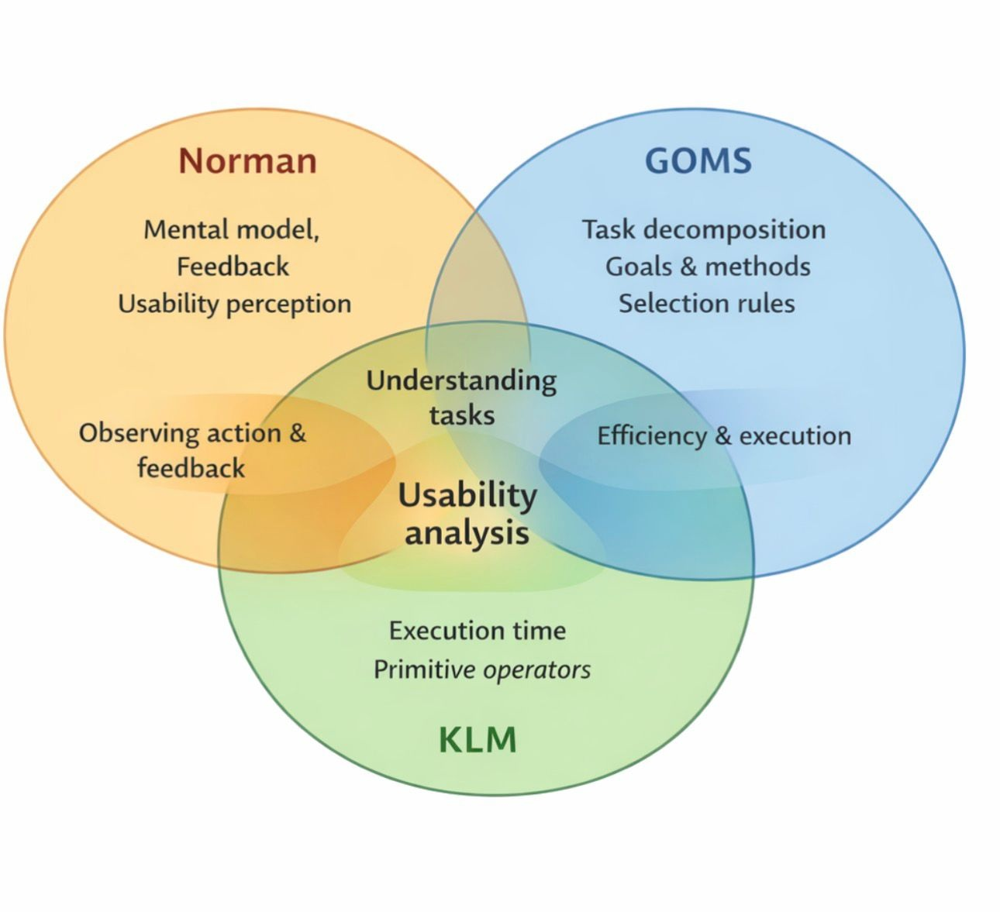

Visual Comparison

This diagram summarizes three HCI models:
Norman focuses on cognition, errors, and feedback.
GOMS analyzes goals, operators, methods, and selection rules for expert users.
KLM predicts execution time for low-level actions using seven operators: K, P, H, B, D, M, R.
Overlaps show similarities:
• Execution-level actions (GOMS ↔ KLM)
• Cognitive planning (Norman ↔ GOMS)
Example: Automatic Syringe
Quick fixes: You should expect to spend both time and money on interface design, just as you would with other parts of a system. In one sense, there are no quick fixes. However, a few simple steps can make a dramatic improvement.
Think 'user': About 90% of the value of any interface design technique is that it forces the designer to remember that someone else will use the system under construction.
Try it out: Many designers build a system they find easy and pleasant, and are surprised anyone else could have trouble. Simply having someone use an early interface version (without the designer guiding them) is extremely valuable. Professional usability labs may use video equipment or one-way mirrors, but even a notebook, pencil, or home video camera is sufficient.
Involve the users: Where possible, involve eventual users in the design process. They have vital knowledge and will find flaws quickly. For example, during development of a mechanical syringe, hospital staff testing a prototype quickly noticed a potentially fatal flaw in its interface.

Iterate: People are complicated, so you won’t get the interface right the first time. Programming an interface can be time-consuming, and designers may resist changes. Early prototypes should be easy to discard. Tools like HyperCard or Visual Basic allow quick mockups. Paper designs and simple models can be used for visual and layout decisions.
Connection to HCI Models
- Norman (1988): Shows cognitive errors and feedback issues. The numeric keypad risk and redesign illustrate how visibility, feedback, and error prevention reduce mistakes (Gulf of Execution/Evaluation).
- GOMS (1983): Breaks the dose-setting task into Goals, Operators, Methods, and Selection rules. Users selecting digits and adjusting buttons can be analyzed as task sequences with alternative methods.
- KLM: Predicts execution time for low-level actions: pointing to buttons, pressing increment/decrement, and confirming doses. Each physical action can be mapped to KLM operators (P, K, H, M).
Reference
Dix, A., Finlay, J., Abowd, G., & Beale, R. (2004). Human–Computer Interaction (3rd ed.), Chapters 9 & 12 and lecture.